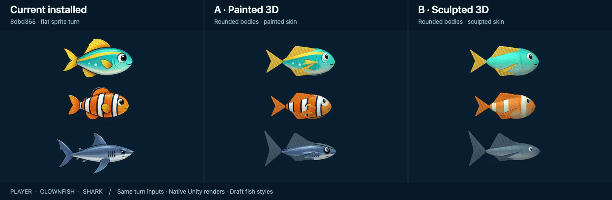

A: painted 3D keeps the existing character art. B: sculpted 3D uses procedural skin and stronger lighting. Both rotate rounded meshes through a head-on pose with paired eyes, bent tails and separate fins.
Compare both drafts with the current installed animation

Left: installed 8dbd365. Middle: painted 3D draft. Right: sculpted 3D draft. Identical four-second turn inputs.Download three-way comparisonSee all twelve species in the game